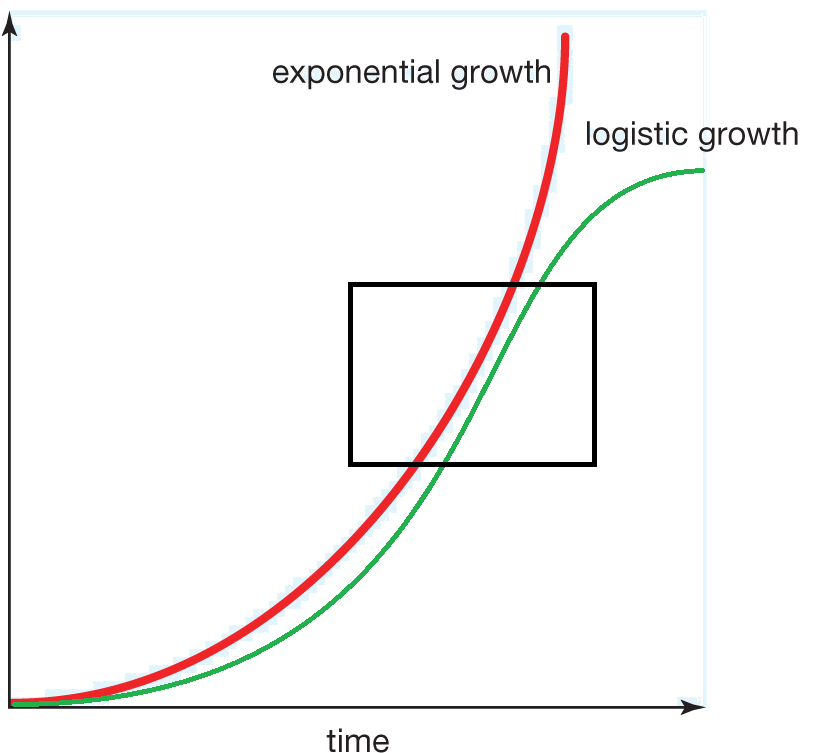
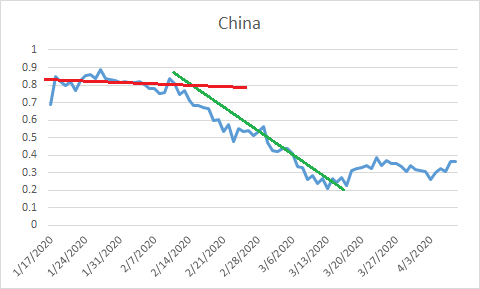
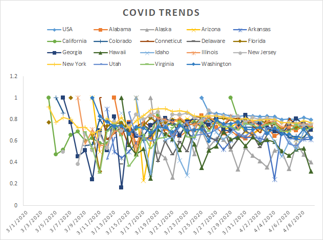

 I ran across a great YouTube video discussing the mathematical model for exponential growth. The problem is that while COVID is on the rise in any area it is hard to tell where we are in the course of the epidemic. What we want to see is that nice bell curve created by logistic growth (i.e. slowing of the disease). Up to a certain point, however, the curve looks just like exponential growth (i.e. acceleration of the disease). So, we want to know when the graph is starting to slow down and up to some point (the black box) it is really hard to tell if we are still in the exponential growth phase or if we are starting to grow logistically.
So, this great YouTube video talked about the way that the data grows during the exponential phase. Basically the proportion of *NEW* cases to total cases should be the same during the exponential growth. If we see it start to diminish, it means we are wining and the curve is going to bend over soon. I decided to start tracking the data based on what I can get online for various states. I'm not going to spend a lot of time on this each day, but in about a week I'll have all 50 states on the tracker.
 What we are looking for is a flat line that curves down. As long as we are in the flat line (red) here, we are still in exponential growth and we still have to slow the disease down. Once the line curves down (green), then we have the disease under control and things are finally looking better. This isn't a guarantee, just a trend. Hopefully everyone will see a trend down in the near future. You can email me with any questions. Please remember that this doesn't end until the disease is completely dead or everyone has had it. All I'm tracking is the potential for early good news. The top of the curve doesn't mean you can go outside and start spreading it again! You can see that China is already dealing with a small amount of resurgence. Stay home!
Another great site on this subject.
